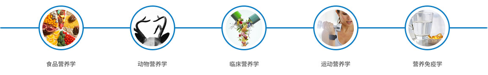
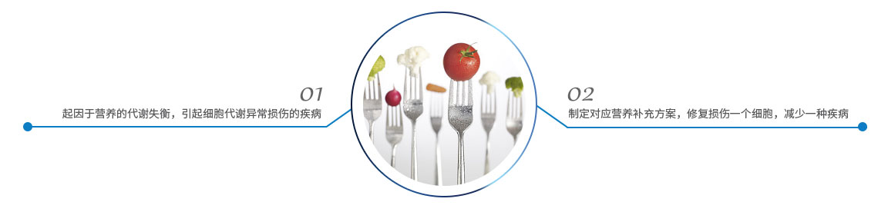

完整疗愈健康管理中心
通过生物电，生物共振，能量学，心理等方法，综合对客人进行细胞层面的保养，尤其是线粒体ATP层面上的保养。
营养医学的理论认为：疾病的本质是人体细胞受损伤的过程，治疗的过程实际上是受损伤细胞修复的过程。所以，均衡营养一个细胞，预防一个疾病；缺乏一种营养素，产生一种疾病。营养素的运动和更新，是恢复人体细胞功能的根本方法。因为它们的运动，撞击了周围的细胞，从而补充细胞营养、激活、改善细胞的活力。故要使细胞功能恢复，必须及时补充均衡的营养来激活细胞，改善细胞生存的内外环境，改变其周围营养的浓度与压力。人体内营养的运动规律，是压力高的向压力低的方向运动，浓度高的向浓度低的方向疏散。营养运行特点：是细胞外的营养向上行，细胞内的实体物质向下行。在升降的运行中，细胞与营养的撞击，是细胞运动的动力之一。
营养是生命的物质基础，也是治疗疾病和健康长寿的保证。“医食同源，药食同根”，说明营养和药物有异曲同工之处。合理均衡的营养可以提高人体预防疾病的能力，减少并发症，促进疾病的康复。
营养医学包含学科
营养医学治疗原理
营养医学治疗定制流程
营养医学临床意义